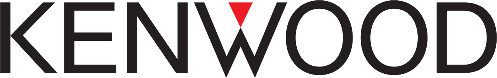
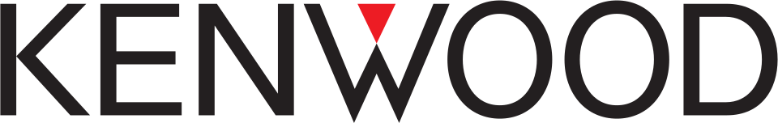
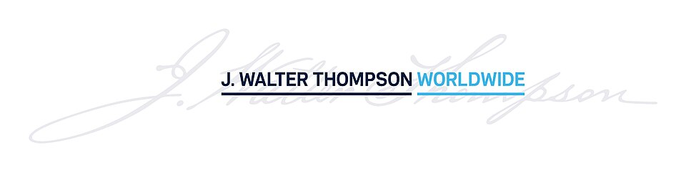
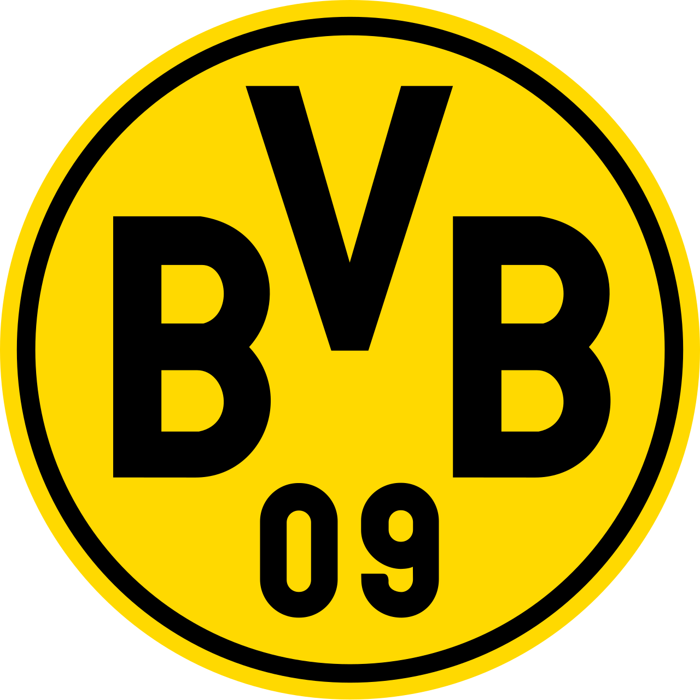
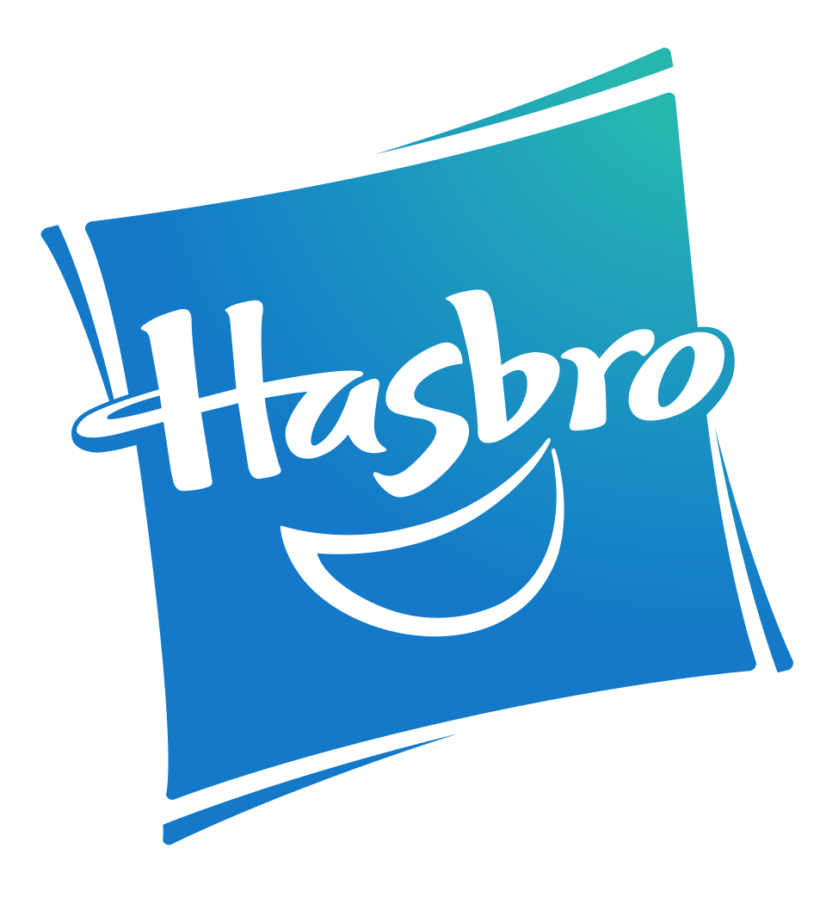
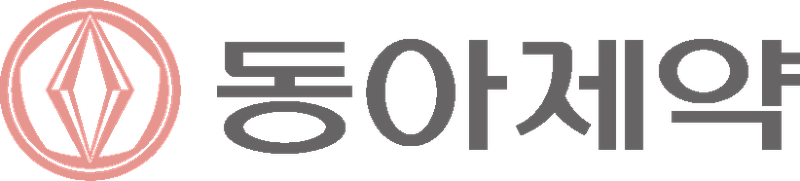
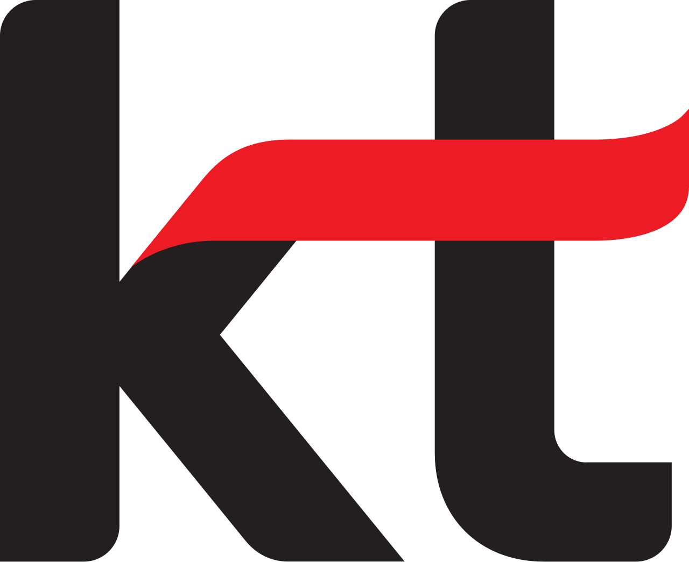
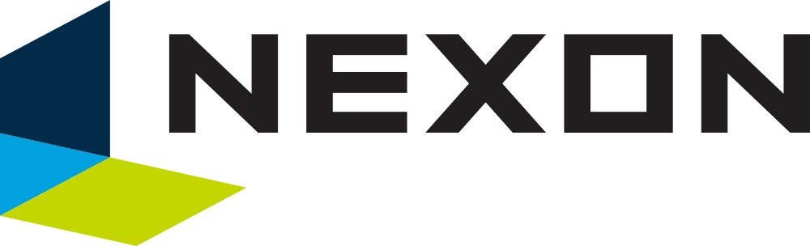
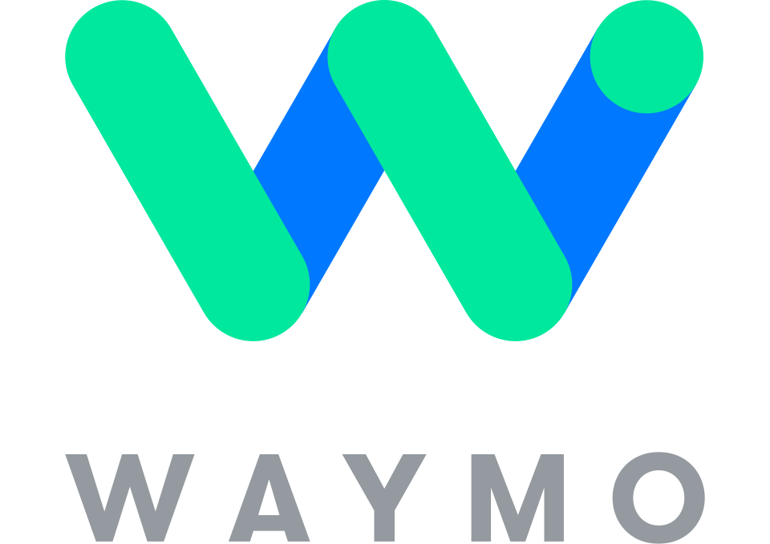

12월에 태어난 브랜드 89곳
12월에 태어난 브랜드 89곳을 탄생일 순으로 모았습니다. 오픈AI(OpenAI), 닛산 자동차(Nissan), 국제 민간 항공 기구(International Civil Aviation Organization)가 모두 12월생입니다.
2026년 12월, 주년을 맞는 브랜드
- 80주년
 크리스챤 디올(Dior)1946년 12월 16일 탄생
크리스챤 디올(Dior)1946년 12월 16일 탄생 - 80주년
 디올(Christian Dior)1946년 12월 16일 탄생
디올(Christian Dior)1946년 12월 16일 탄생 - 80주년

켄우드(Kenwood)1946년 12월 21일 탄생 - 80주년

켄우드(Kenwood Corporation)1946년 12월 21일 탄생 - 50주년한한국체육대학교(Korea National Sport University)1976년 12월 30일 탄생
- 40주년
 에어 트랜샛(Air Transat)1986년 12월 탄생
에어 트랜샛(Air Transat)1986년 12월 탄생 - 20주년유유나이티드 론치 얼라이언스(United Launch Alliance)2006년 12월 1일 탄생
- 20주년
 FNC 엔터테인먼트(FNC Entertainment)2006년 12월 14일 탄생
FNC 엔터테인먼트(FNC Entertainment)2006년 12월 14일 탄생
12월 탄생 달력
날짜까지 확인된 77곳을 날짜 칸에 놓았습니다.
- 1마세라티동아제약+6
- 2O'Reilly Auto Parts맥라렌 오토모티브+1
- 3문학동네플레이스테이션
- 4버거킹파라마운트 글로벌
- 5IHI Corporation
- 6해즈브로텍사스 인스트루먼트+3
- 7깃코만TDK+2
- 8미그오픈AI
- 9
- 10KT Corporation시스코
- 11
- 12
- 13하리보올리브 가든+1
- 14닷지카벨라스+1
- 15부가티
- 16크리스챤 디올디올+1
- 17보그아지노모도+1
- 18비방디
- 19스위스리보루시아 도르트문트+2
- 20에어아시아
- 21노보 노디스크에티오피아 항공+5
- 22
- 23연방준비제도
- 24르노교보문고
- 25대한제분곰표
- 26닛산 자동차Anderson Valley Brewing Company+1
- 27전일본공수Family Brewery Bernard+2
- 28헤클러운트코흐금호석유화학
- 29삼천당제약현대자동차+1
- 30한국체육대학교리노공업+1
- 31영국 동인도 회사Ameren+1
12월생 브랜드 연대순
 영국 동인도 회사(East India Company)영국 · 리테일·커머스
영국 동인도 회사(East India Company)영국 · 리테일·커머스 IHI Corporation일본 · 에너지·산업재
IHI Corporation일본 · 에너지·산업재 스위스리(Swiss Re)스위스 · 금융
스위스리(Swiss Re)스위스 · 금융
J. Walter Thompson미국 · 브랜드·비즈니스 보그(Vogue)미국 · 미디어·엔터테인먼트
보그(Vogue)미국 · 미디어·엔터테인먼트- Richter+Frenzel독일 · 리테일·커머스
 르노(Renault)프랑스 · 모빌리티
르노(Renault)프랑스 · 모빌리티 뷰익(Buick)미국 · 모빌리티
뷰익(Buick)미국 · 모빌리티 닷지(Dodge)미국 · 모빌리티
닷지(Dodge)미국 · 모빌리티
보루시아 도르트문트(Borussia Dortmund)스포츠·아웃도어 연방준비제도(Federal Reserve System)미국 · 금융
연방준비제도(Federal Reserve System)미국 · 금융 마세라티(Maserati)이탈리아 · 모빌리티
마세라티(Maserati)이탈리아 · 모빌리티 깃코만(Kikkoman)일본 · 식음료
깃코만(Kikkoman)일본 · 식음료 하리보(Haribo)독일 · 식음료
하리보(Haribo)독일 · 식음료
해즈브로(Hasbro)미국 · 홈·라이프스타일- 노노보 노디스크(Novo)덴마크 · 헬스·제약
 아지노모도(Ajinomoto)일본 · 식음료
아지노모도(Ajinomoto)일본 · 식음료 텍사스 인스트루먼트(Texas Instruments)미국 · 기술·전자
텍사스 인스트루먼트(Texas Instruments)미국 · 기술·전자
동아제약(Dong-A Pharmaceutical)한국 · 헬스·제약 닛산 자동차(Nissan)일본 · 모빌리티
닛산 자동차(Nissan)일본 · 모빌리티 TDK일본 · 기술·전자
TDK일본 · 기술·전자 미그(Russian Aircraft Corporation MiG)러시아 · 기술·전자
미그(Russian Aircraft Corporation MiG)러시아 · 기술·전자- 삼천당제약(SamChunDang Pharm)한국 · 헬스·제약
 국제 민간 항공 기구(International Civil Aviation Organization)캐나다 · 여행·호스피탈리티
국제 민간 항공 기구(International Civil Aviation Organization)캐나다 · 여행·호스피탈리티 에티오피아 항공(Ethiopian Airlines)모빌리티
에티오피아 항공(Ethiopian Airlines)모빌리티- 크리스챤 디올(Dior)패션·럭셔리
- 디올(Christian Dior)프랑스 · 패션·럭셔리
- 켄우드(Kenwood)일본 · 브랜드·비즈니스
- 켄우드(Kenwood Corporation)일본 · 기술·전자
 헤클러운트코흐(Heckler & Koch)독일 · 에너지·산업재
헤클러운트코흐(Heckler & Koch)독일 · 에너지·산업재- 대한제분곰표(Daehan Flour Mills / Gompyo)한국 · 브랜드·비즈니스
 전일본공수(All Nippon Airways)일본 · 모빌리티
전일본공수(All Nippon Airways)일본 · 모빌리티 버거킹(Burger King)식음료
버거킹(Burger King)식음료 APA Corporation미국 · 에너지·산업재
APA Corporation미국 · 에너지·산업재 O'Reilly Auto Parts미국 · 리테일·커머스
O'Reilly Auto Parts미국 · 리테일·커머스 카벨라스(Cabela's)미국 · 스포츠·아웃도어
카벨라스(Cabela's)미국 · 스포츠·아웃도어 트랜스아비아(Transavia)네덜란드 · 여행·호스피탈리티
트랜스아비아(Transavia)네덜란드 · 여행·호스피탈리티 현대자동차(Hyundai Motor)한국 · 모빌리티
현대자동차(Hyundai Motor)한국 · 모빌리티 TUI (기업)(TUI Group)독일 · 여행·호스피탈리티
TUI (기업)(TUI Group)독일 · 여행·호스피탈리티- GS건설(GS E&C)한국 · 브랜드·비즈니스
 금호석유화학(Kumho Petrochemical)한국 · 브랜드·비즈니스
금호석유화학(Kumho Petrochemical)한국 · 브랜드·비즈니스- 한한국체육대학교(Korea National Sport University)한국 · 스포츠·아웃도어
- 리노공업(Leeno Industrial)기술·전자
 연합뉴스(Yonhap News Agency)한국 · 미디어·엔터테인먼트
연합뉴스(Yonhap News Agency)한국 · 미디어·엔터테인먼트 교보문고(Kyobo Book Centre)한국 · 리테일·커머스
교보문고(Kyobo Book Centre)한국 · 리테일·커머스
KT Corporation한국 · 기술·전자 올리브 가든(Olive Garden)미국 · 식음료
올리브 가든(Olive Garden)미국 · 식음료 시스코(Cisco)미국 · 기술·전자
시스코(Cisco)미국 · 기술·전자 맥라렌 오토모티브(McLaren Automotive)영국 · 모빌리티
맥라렌 오토모티브(McLaren Automotive)영국 · 모빌리티- 상상하이 항공(Shanghai Airlines)모빌리티
- 에어 트랜샛(Air Transat)캐나다 · 모빌리티
 소니 픽처스 엔터테인먼트(Sony Pictures)미국 · 미디어·엔터테인먼트
소니 픽처스 엔터테인먼트(Sony Pictures)미국 · 미디어·엔터테인먼트- 비방디(Vivendi)프랑스 · 미디어·엔터테인먼트
 Anderson Valley Brewing Company미국 · 식음료
Anderson Valley Brewing Company미국 · 식음료 할리우드 레코드(Hollywood Records)미국 · 미디어·엔터테인먼트
할리우드 레코드(Hollywood Records)미국 · 미디어·엔터테인먼트 블랙다이아몬드(Black Diamond Equipment)미국 · 스포츠·아웃도어
블랙다이아몬드(Black Diamond Equipment)미국 · 스포츠·아웃도어 문학동네(Munhakdongne)미디어·엔터테인먼트
문학동네(Munhakdongne)미디어·엔터테인먼트 마블 스튜디오(Marvel Studios)미국 · 미디어·엔터테인먼트
마블 스튜디오(Marvel Studios)미국 · 미디어·엔터테인먼트 에어아시아(AirAsia)말레이시아 · 여행·호스피탈리티
에어아시아(AirAsia)말레이시아 · 여행·호스피탈리티 EMCOR미국 · 에너지·산업재
EMCOR미국 · 에너지·산업재 BGF리테일(BGF Retail)한국 · 리테일·커머스
BGF리테일(BGF Retail)한국 · 리테일·커머스 플레이스테이션(PlayStation)일본 · 미디어·엔터테인먼트
플레이스테이션(PlayStation)일본 · 미디어·엔터테인먼트 CJ온스타일(CJ ENM Commerce Division)한국 · 리테일·커머스
CJ온스타일(CJ ENM Commerce Division)한국 · 리테일·커머스
넥슨(Nexon)미디어·엔터테인먼트 디아지오(Diageo)영국 · 식음료
디아지오(Diageo)영국 · 식음료 Ameren미국 · 에너지·산업재
Ameren미국 · 에너지·산업재 스토라엔소(Stora Enso)스웨덴 · 에너지·산업재
스토라엔소(Stora Enso)스웨덴 · 에너지·산업재 에어버스(Airbus)네덜란드 · 에너지·산업재
에어버스(Airbus)네덜란드 · 에너지·산업재 탈레스 그룹(Thales Group)프랑스 · 에너지·산업재
탈레스 그룹(Thales Group)프랑스 · 에너지·산업재 부가티(Bugatti Automobiles)프랑스 · 모빌리티
부가티(Bugatti Automobiles)프랑스 · 모빌리티 Family Brewery Bernard체코 · 식음료
Family Brewery Bernard체코 · 식음료 글락소스미스클라인(GSK)영국 · 헬스·제약
글락소스미스클라인(GSK)영국 · 헬스·제약 국가전망공사(State Grid Corporation of China)중국 · 에너지·산업재
국가전망공사(State Grid Corporation of China)중국 · 에너지·산업재 탐앤탐스(TOM N TOMS)한국 · 식음료
탐앤탐스(TOM N TOMS)한국 · 식음료- 채선당한국 · 식음료
 하나금융그룹(Hana Financial Group)금융
하나금융그룹(Hana Financial Group)금융 바이어컴(Viacom)미국 · 미디어·엔터테인먼트
바이어컴(Viacom)미국 · 미디어·엔터테인먼트- 유유나이티드 론치 얼라이언스(United Launch Alliance)미국 · 에너지·산업재
- FNC 엔터테인먼트(FNC Entertainment)한국 · 미디어·엔터테인먼트
 씨제스 스튜디오(C-JeS Studios)한국 · 미디어·엔터테인먼트
씨제스 스튜디오(C-JeS Studios)한국 · 미디어·엔터테인먼트 코스알엑스(COSRX)한국 · 뷰티·퍼스널케어
코스알엑스(COSRX)한국 · 뷰티·퍼스널케어 원플러스(OnePlus)기술·전자
원플러스(OnePlus)기술·전자 시프트업(Shift Up)한국 · 미디어·엔터테인먼트
시프트업(Shift Up)한국 · 미디어·엔터테인먼트 에스알(SR Corporation)한국 · 모빌리티
에스알(SR Corporation)한국 · 모빌리티 메가MGC커피(Mega MGC Coffee)식음료
메가MGC커피(Mega MGC Coffee)식음료 오픈AI(OpenAI)미국 · AI·인공지능
오픈AI(OpenAI)미국 · AI·인공지능
웨이모(Waymo)미국 · 모빌리티 파라마운트 글로벌(Paramount Global)미국 · 미디어·엔터테인먼트
파라마운트 글로벌(Paramount Global)미국 · 미디어·엔터테인먼트 LG에너지솔루션(LG Energy Solution)한국 · 기술·전자
LG에너지솔루션(LG Energy Solution)한국 · 기술·전자
12월에 태어난 것으로 확인된 브랜드는 89곳입니다. 가장 오래된 곳은 1600년의 영국 동인도 회사(East India Company), 가장 최근은 2020년의 LG에너지솔루션(LG Energy Solution)입니다. 2026년 12월에는 크리스챤 디올(Dior)(80주년), 디올(Christian Dior)(80주년), 켄우드(Kenwood)(80주년) 등 9곳이 주년을 맞습니다. 생일이 같은 브랜드도 있습니다. 12월 1일에는 마세라티(Maserati)(1914)와 동아제약(Dong-A Pharmaceutical)(1932)와 TUI (기업)(TUI Group)(1968), 12월 21일에는 노보 노디스크(Novo)(1923)와 에티오피아 항공(Ethiopian Airlines)(1945)와 켄우드(Kenwood)(1946)가 태어났습니다. 설립연도가 확인된 브랜드는 88개이며 가장 오래된 곳은 1853년, 가장 최근은 2020년에 시작했습니다. 시기별로는 1900년 이전 7개, 1900~1949년 22개, 1950~1999년 38개, 2000년 이후 21개입니다. 수록 자료로는 로고 이미지 85개, 로고 변천 자료 8개, 연혁 타임라인 11개를 갖췄습니다. 이 가운데 78개는 공식 웹사이트가 일치하는 위키데이터 개체로 연결해 두었습니다. 날짜는 위키데이터, 위키백과 정보상자, 브랜드 본문 가운데 같은 연월로 확인되는 값만 썼고, 출처끼리 다르면 싣지 않았습니다.